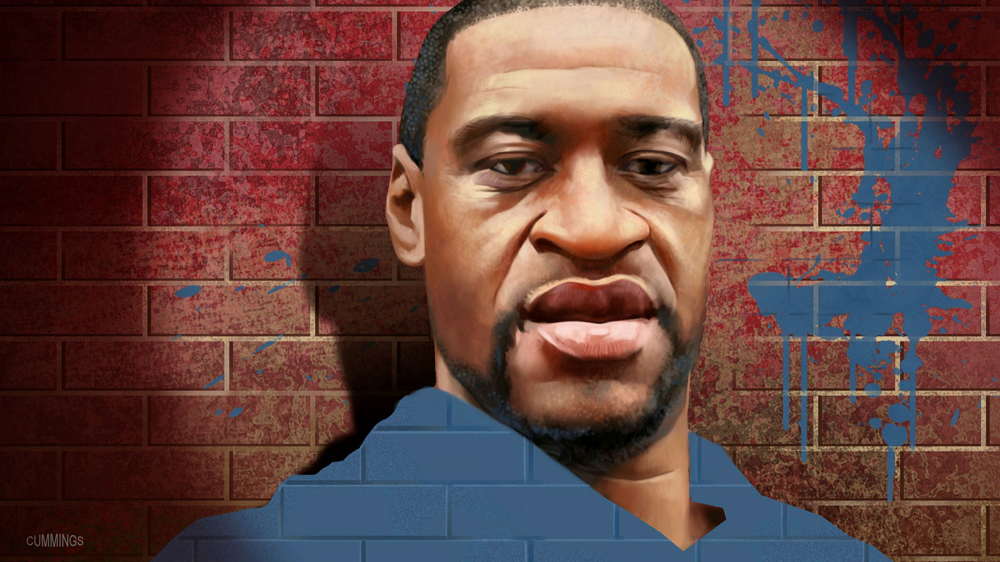
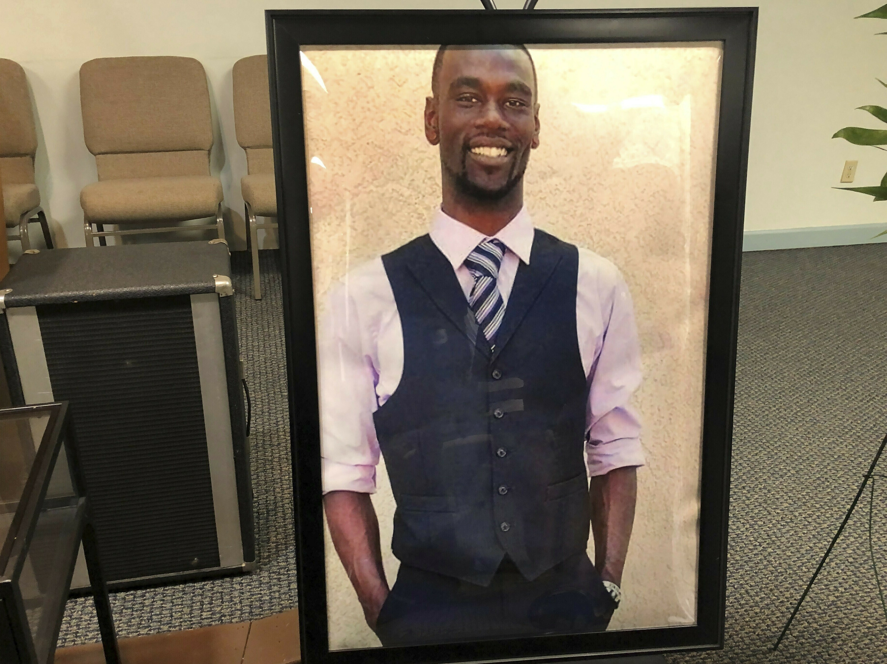

Racism and Police Brutality in the U.S.
Racism
A form of oppression in which one race maintains supremacy over another through attitudes, behaviors, institutions, systems, and culture.
Police Brutality
- Excessive and unwarranted use of force by law enforcement against an individual or a group.
- The product of structural and institutional racism.
- Bigger than individual acts.
- Culture of police aggression.
What The Statistics Say About It
Every year, more than 1,000 people are killed by U.S. police.
Black Americans are killed by police at more than twice the rate of White Americans.
Source: The Washington Post
Real Life, Real Victims

- George Perry Floyd Jr., an African-American man, was murdered on May 25, 2020.
- By Derek Chauvin, a white Minneapolis police officer.
- Chauvin pressed his knee against Floyd's neck for over 9 minutes.

- Tyre Nichols, a 29-year-old African-American man, was killed on January 27, 2023.
- Nichols was beat up by five Black Tennesssee police officers.
- Police officers were fired and charged with murder.
What Can We Do About It?
Acknowledge the existing problem (don't be part of the blind ideology).
Spread awareness to others, talk with other people about the subject.
Call out and stop racist behavior from people around you.
Infographic By: Tomas Oh